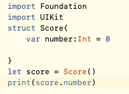

Lesson3: Structures
This is a simple structure. It can make a type you want along with what to do.
Structures can be combined inside a function. Add period to specify.
Initializers are basicallly showing the instance of values. This one has none so it goes to the default.
Custom initializers are defining the value of something.

Mutating initializers basically changing the initailizers from what it was.

There can be computing properties which means it allows it to return the calculated values.
Self is the current instanccccccce of the initializers. It must be used when it is mentioning before and in front